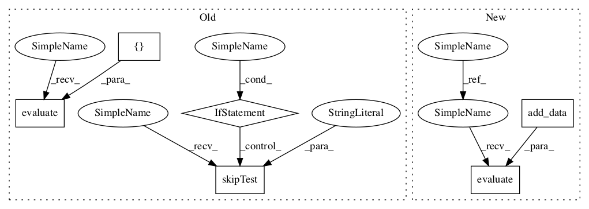

c611d9b6b35e44326bc18096dc57abe18eb6c90b,tf_agents/replay_buffers/tf_uniform_replay_buffer_test.py,TFUniformReplayBufferTest,testMultiStepSampling,#TFUniformReplayBufferTest#Any#,208

Before Change
("BatchSizeFive", 5),
)
def testMultiStepSampling(self, batch_size):
if tf.executing_eagerly():
self.skipTest("b/123885577")
spec = specs.TensorSpec([], tf.int32, "action")
replay_buffer = tf_uniform_replay_buffer.TFUniformReplayBuffer(
spec, batch_size=batch_size)
action = tf.stack([tf.Variable(0).count_up_to(10)] * batch_size)
add_op = replay_buffer.add_batch(action)
(step, next_step), _ = replay_buffer.get_next(num_steps=2,
time_stacked=False)
self.evaluate(tf.compat.v1.global_variables_initializer())
for _ in range(10):
self.evaluate(add_op)
for _ in range(100):
step_, next_step_ = self.evaluate([step, next_step])
self.assertEqual((step_ + 1) % 10, next_step_)
@parameterized.named_parameters(
("BatchSizeOne", 1),
After Change
("BatchSizeOne", 1),
("BatchSizeFive", 5),
)
def testMultiStepSampling(self, batch_size):
spec = specs.TensorSpec([], tf.int64, "action")
replay_buffer = tf_uniform_replay_buffer.TFUniformReplayBuffer(
spec, batch_size=batch_size)
@common.function(autograph=True)
def add_data():
for i in tf.range(10, dtype=tf.int64):
replay_buffer.add_batch(tf.ones((batch_size,), dtype=tf.int64) * i)
if tf.executing_eagerly():
sample = lambda: replay_buffer.get_next(num_steps=2, time_stacked=False)
else:
sample = replay_buffer.get_next(
num_steps=2, time_stacked=False)
self.evaluate(tf.compat.v1.global_variables_initializer())
self.evaluate(add_data())
for _ in range(100):
(step_, next_step_), _ = self.evaluate(sample)
self.assertEqual((step_ + 1) % 10, next_step_)
In pattern: SUPERPATTERN
Frequency: 3
Non-data size: 6
Instances
Project Name: tensorflow/agents
Commit Name: c611d9b6b35e44326bc18096dc57abe18eb6c90b
Time:
Author: null
File Name: tf_agents/replay_buffers/tf_uniform_replay_buffer_test.py
Class Name: TFUniformReplayBufferTest
Method Name: testMultiStepSampling
Project Name: tensorflow/agents
Commit Name: c611d9b6b35e44326bc18096dc57abe18eb6c90b
Time:
Author: null
File Name: tf_agents/replay_buffers/tf_uniform_replay_buffer_test.py
Class Name: TFUniformReplayBufferTest
Method Name: testMultiStepStackedBatchedSampling
Project Name: tensorflow/agents
Commit Name: c611d9b6b35e44326bc18096dc57abe18eb6c90b
Time:
Author: null
File Name: tf_agents/replay_buffers/tf_uniform_replay_buffer_test.py
Class Name: TFUniformReplayBufferTest
Method Name: testMultiStepStackedSampling